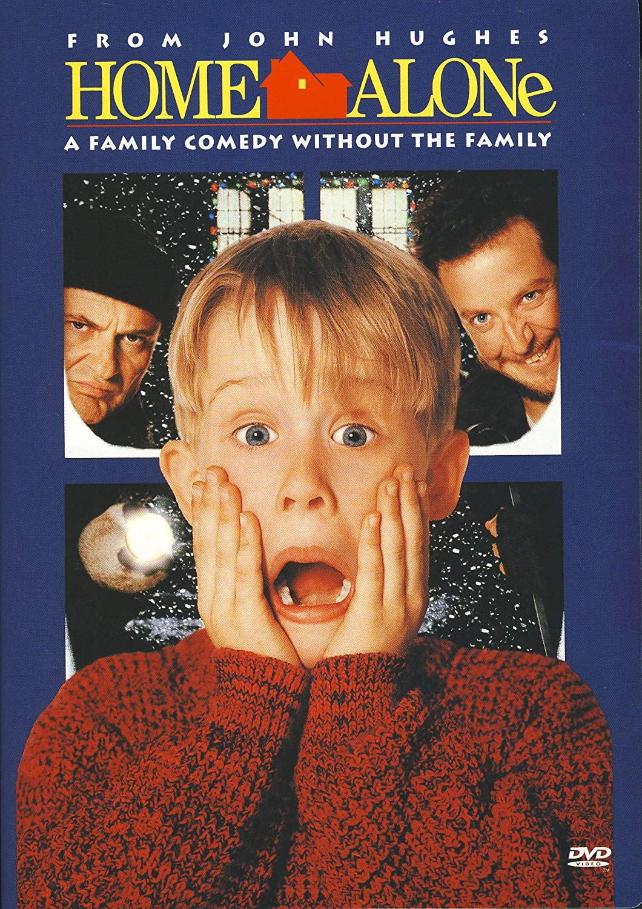
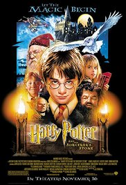

Genres: Action, Adventure, Crime, Detective Release date: 31 December 2009 Casts: Robert Downey Jr, Jude Law, Rachel McAdams Description: Detective Sherlock Holmes and his stalwart partner Watson engage in a battle of wits and brawn with a nemesis whose plot is a threat to all of England. Budget: $90 million Box office: $524 million
Genres: Comedy, Family Release date: 16 November 1990 Casts: John Williams, Julio Macat, Raja Gosnell Description: An eight-year-old troublemaker must protect his house from a pair of burglars when he is accidentally left home alone by his family during Christmas vacation. Budget: $18 million Box office: $476.7 million
Genres: Action, Crime, Drama, Mystery Release date: 29 January 2015 Casts: Chris Hemsworth, Viola Davis, Wei Tang Description:A furloughed convict and his American and Chinese partners hunt a high-level cybercrime network from Chicago to Los Angeles to Hong Kong to Jakarta. Budget: $19 million Box office: $70 million
Genres: Crime, Drama, Thriller,Mystery Release date: 2 Januart 2007 Casts: Callan McAuliffe, Lorraine Nicholson, Daniel Eric Gold Description:A dedicated teacher (Hilary Swank) in a racially divided Los Angeles school has a class of at-risk teenagers deemed incapable of learning. Instead of giving up, she inspires her students to take an interest in their education and planning their future. She assigns reading material that relates to their lives and encourages them all to keep journals. Budget: $7.5 million Box office: $20 million